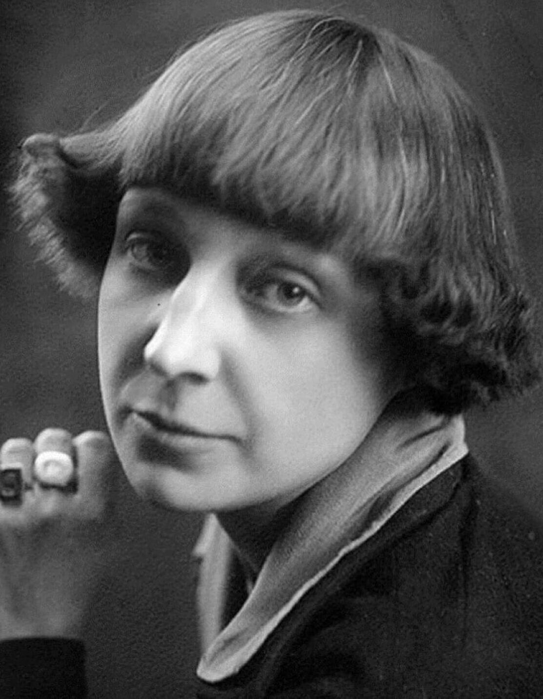
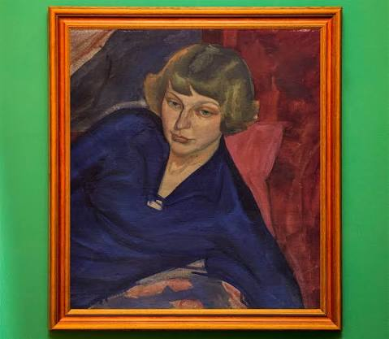

Биография
Основные события жизни и литературного пути.
Открыть страницуСайт о жизни, творческом пути и литературном наследии одной из самых самобытных поэтесс русской литературы XX века.
Узнать больше Читать стихи

Марина Ивановна Цветаева (1892–1941) — русская поэтесса, прозаик и переводчица. Её стихи отличают выразительная интонация, смелый ритм и эмоциональная глубина.
В творчестве важны темы любви, свободы, одиночества, памяти, родины и предназначения поэта.
Основные события жизни и литературного пути.
Открыть страницуПодборка из восьми произведений.
Открыть страницуДесять строк и высказываний.
Открыть страницуМеста для фотографий и иллюстраций.
Открыть страницу